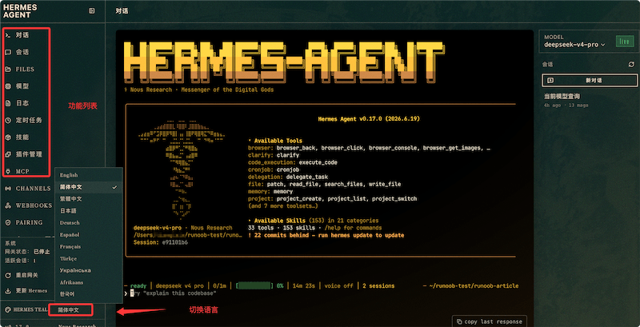

Hermes Agent ダッシュボード（Dashboard）
DashboardはHermesのWebベースの視覚的管理インターフェースです。
ブラウザを通じて、すべてのProfileの設定、モデル、スキル、MCPサーバー、定期タスク、セッションを一元管理できます。コマンドラインの引数を覚える必要はありません。
この章では、Dashboardの各機能モジュールを順に紹介し、日常の運用効率を向上させる方法を説明します。
ダッシュボード（Dashboard）とは
コマンドラインをHermesのターミナルインターフェースに例えるなら、ダッシュボード（Dashboard）はそのコントロールセンターです。
Dashboardはローカルで動作するWebアプリケーションで、ブラウザからアクセスし、グラフィカルな管理体験を提供します。
その中核的な価値は次のとおりです：
- 複数Profileの一元管理：同じインターフェースで全Profileを切り替えて管理でき、異なるターミナルウィンドウを何度も起動する必要がありません
- 視覚的な設定：ドロップダウンメニューでモデルを選択、ドラッグ＆ドロップでスキルを有効化、ワンクリックでMCPサーバーをインストールでき、設定のハードルを下げます
- 使用量が一目で分かる：トークン消費、費用統計、セッション履歴をグラフ形式で表示
- オンラインチャット：ブラウザ上で直接任意のProfileのAgentと対話し、設定の効果をテストできます
Dashboardはコマンドラインの代替品ではなく、補完するツールです。コマンドラインは迅速な操作やスクリプト化に適しており、Dashboardは閲覧、探索、管理に適しています。
起動とアクセス
基本起動
1つのコマンドでDashboardを起動できます：
hermes dashboard
起動後、ブラウザで開きますhttp://localhost:9119アクセスできます。

起動オプション
# 启动并预选指定 Profile（跳过 Profile 选择步骤） coder dashboard # 指定自定义端口 hermes dashboard --port 8080 # 绑定到所有网络接口（谨慎使用，建议配合防火墙） hermes dashboard --port 8080 --host 0.0.0.0
| オプション | 説明 | デフォルト値 |
|---|---|---|
| --port | Webサービスのリッスンポート | 9119 |
| --host | バインドするネットワークインターフェースアドレス | 127.0.0.1（ローカルのみ） |
デフォルトではDashboardは127.0.0.1にのみバインドされ、ローカルからのみアクセス可能です。他のデバイスからアクセスする必要がある場合（例：サーバーにデプロイしてリモート管理する場合）は、--host 0.0.0.0 を使用し、ファイアウォールルールで送信元IPを制限してください。
Docker環境での起動
Dockerデプロイメントでは、Dashboardは独立したサービスとして実行されます：
例
# Dashboardを独立したサービスとして
services:
dashboard:
image: nousresearch/hermes-agent:latest
command: hermes dashboard --port 9119
network_mode: host
volumes:
- ~/.hermes:/home/hermes/.hermes
ports:
- "127.0.0.1:9119:9119"
restart: unless-stopped
機能モジュール詳細
Profile 切替器
サイドバーの上部にあるProfile切替器は、Dashboardで最も重要なナビゲーションコンポーネントです。
その中核機能は、Dashboardを再起動せずに異なるProfile間を即座に切り替えられることです：
- ドロップダウンメニューに作成済みのすべてのProfile（default、coder、researcherなど）が一覧表示されます
- 切り替えると、下のすべてのモジュール（Models、Skills、MCP、Chat）が現在のProfileのデータに自動更新されます
- 現在選択中のProfile名が常に上部に表示され、誤操作を防ぎます
これにより、複数Profile管理で最もよくある課題が解決されます。以前は「coderのモデルは何か、researcherにどのスキルがインストールされているか」を覚えておく必要がありましたが、今は切り替えるだけで全部を確認できます。
Models モデル管理
Modelsモジュールはモデル設定と使用量の監視を担当し、Dashboardで最も頻繁に使用される機能の1つです。
メインモデル設定：ドロップダウンメニューからデフォルトで使用するモデルを選択でき、プロバイダー（OpenAI、Anthropic、OpenRouterなど）でフィルタリングできます。
モデルを切り替えると設定は即座に有効になります。現在のセッションは旧モデル、新しいセッションは新モデルを使用します。
補助モデル設定：特定のタスクに独立したモデルを指定して費用を削減します：
| 補助タスク | 用途 | 推奨モデル |
|---|---|---|
| background_review | バックグラウンドでの自己改善レビュー | 低コストモデル（例：gemini-flash） |
| vision | 画像分析と説明 | ビジョン対応モデル |
| session_search | セッション横断検索の要約 | 低コストモデル |
使用量と費用の統計：Modelsページでは次の項目をグラフ形式で表示します：
- 各モデルの累計トークン消費量（入力＋出力）
- 米ドル換算の累計費用
- 最近の使用量トレンド（過去7日間/30日間）
- Profileごとの使用量比較
補助モデルはコスト管理に最も効果的な手段です。background_reviewを例にすると、claude-sonnetを使用すると1回のレビューで約$0.02かかる可能性がありますが、gemini-flashに変えれば約$0.001で済むかもしれません。1日に数十回の対話を重ねると、その差は大きくなります。
Skills スキル管理
Skillsモジュールは、閲覧からインストール、作成までの全ライフサイクルをカバーする完全なスキル管理インターフェースを提供します。
スキルの閲覧と検索：
- グリッドビューでインストール済みの全スキルを表示し、各カードに名前、説明、カテゴリタグを表示します
- 検索ボックスで名前と説明のキーワードによるフィルタリングが可能です
- カテゴリ（software-development、research、devopsなど）ごとにグループ化して閲覧できます
スキルのインストール：
- ワンクリックで内蔵のオプションスキルをインストール
- agentskills.io Hubからコミュニティスキルを検索してインストール
- URLから直接スキルをインストール（SKILL.mdの公開リンクを貼り付け）
- インストール後、スラッシュコマンドの一覧に自動的に表示されます
Learn a skill パネル：これはDashboard独自の機能で、グラフィカルな/learnコマンドパレットです。
3つの入力ボックスを提供し、3つの学習ソースに対応します：
| 入力ボックス | 入力内容 | 例 |
|---|---|---|
| ディレクトリ | ローカルドキュメントまたはプロジェクトパス | ~/projects/acme-sdk/docs |
| URL | オンラインドキュメントまたはAPIリファレンスのURL | https://docs.example.com/api |
| フリーテキスト | ワークフローの説明やノートの貼り付け | 「経費精算フロー：ポータルを開き、経費レポートを新規作成...」 |
いずれか1つ以上の入力ボックスに記入してLearnボタンをクリックすると、Agentが材料を収集してSKILL.mdのドラフトを生成します。プレビュー後、確認して保存できます。
MCP サーバー管理
MCPモジュールは、コマンドラインのhermes mcp操作をビジュアルインターフェースに変換します。
MCP カタログ閲覧：
- グリッドビューでNousの厳選カタログ内の全エントリを表示します
- 各エントリに名前、説明、現在のステータス（available / enabled / disabled）を表示します
- ステータスラベルは色で区別されます——緑はenabled、グレーはavailable、黄色はdisabled
インストールと設定：
- エントリをクリックして詳細ページに移動し、サーバーが公開しているツールのリストを確認します
- ワンクリックインストール——APIキーまたはOAuthログインの設定を自動的にガイドします
- インストール後、ツール選択画面で有効にする特定のツールをチェックできます（include/excludeフィルター）
インストール済みサーバーの管理：
- インストール済みの全サーバーの詳細情報を表示
- ツール選択リストを再設定
- config.yamlを編集せずにサーバーを有効化/無効化
- サーバーの接続状態をテスト
Chat オンラインチャット
Chat モジュールを使用すると、ブラウザ上で現在の Profile の Agent と直接対話できます。
そのインターフェースはメッセージアプリに似ており、以下に対応しています：
- テキストメッセージの入力とストリーミング応答の表示
- ツール呼び出しプロセスのリアルタイム表示（Agent がどのツールを呼び出しているか、パラメータと結果を確認できます）
- メッセージ履歴は現在のセッション内でのみ保持されます（ブラウザのタブを閉じると保持されません）
- すべてのスラッシュコマンドに対応（/new、/skills、/memory など）
Chat モジュールの主な用途は設定の効果を素早くテストすることです——モデルやスキル設定を変更した後、ターミナルに切り替える必要はなく、Dashboard で直接メッセージを送信して検証できます。
Chat モジュールのセッションは一時的なものです——タブを閉じると会話履歴は保持されません。永続的なチャット体験が必要な場合は、CLI（hermes chat）またはメッセージプラットフォーム（Telegram/Discord）を使用してください。
Cron 定期タスク管理
Cron モジュールは、スケジュールタスクの視覚的な作成と管理を提供します。
タスクリスト：
- すべてのスケジュールタスクを表形式で表示します。列には、名前、スケジュール、ターゲットプラットフォーム、ステータス（有効/一時停止）が含まれます
- ステータスによるフィルタリングに対応（すべて / 実行中 / 一時停止済み）
- 各タスクの横にはクイック操作ボタンがあります：即時実行、一時停止、再開、削除
タスク作成：グラフィカルなタスク作成フォームです。フィールドは次のとおりです：
- タスク名（一意の識別子）
- スケジュール——自然言語入力（「every day at 8am」など）と cron 式に対応
- Prompt 内容——Agent が毎回実行するタスクの説明
- ターゲットプラットフォーム——タスク結果の配信先
- ターゲットチャット ID——どの具体的な会話に配信するか
- 有効なツールセット——タスク実行時に使用できるツール
実行履歴：各実行のトリガー時刻、完了ステータス、簡単な結果サマリーを確認できます。
その他の機能
設定管理：Dashboard の一部のページでは、config.yaml の一般的な設定を直接編集できます。次のものを含みます：
- ターミナルバックエンドの切り替え（local / docker / ssh など）
- 承認モードの設定（manual / smart / off）
- 表示設定（記憶通知の詳細度など）
チェックポイント管理：ファイルシステムチェックポイントの表示と復元。コマンドラインのhermes checkpoints list機能と同じです。
プラグイン管理：インストール済みプラグインの表示、プラグインの有効化または無効化。
Dashboard ベストプラクティス
日常の使用シーン
| シナリオ | 推奨される方法 |
|---|---|
| 新しい Profile の初期化 | Dashboard の Profile 切り替え機能で新しい Profile を作成し、Models ページでモデルを選択、Skills ページでスキルを選択、MCP ページでサーバーを追加します——全プロセスが視覚的で、手順を逃しません |
| モデル切り替えの評価 | モデルを変更した後、Chat ページで同じ Prompt を使用してテストし、異なるモデルの応答品質と速度を比較します |
| コスト監視 | 毎週 Dashboard の Models ページを開き、使用量の傾向と費用統計を確認し、異常な消費を早期に発見します |
| スキルの発見 | Skills ページで Hub のカタログを閲覧し、興味深いスキルをワンクリックでインストールできます。コマンドラインよりもhermes skills searchはるかに直感的です |
| スケジュールタスクのデバッグ | Cron タスクを作成した後、「即時実行」ボタンで一度テストし、出力が期待どおりであることを確認してから自動スケジュールを有効にします |
| 複数 Agent の運用管理 | Dashboard で異なる Profile を切り替え、それぞれのゲートウェイステータス、Token 消費量、スケジュールタスクを確認できます——1つのインターフェースですべてを管理 |
セキュリティ推奨事項
- Dashboard はデフォルトで 127.0.0.1 のみにバインドされます。リモートアクセスが必要な場合は、必ずファイアウォールルールを設定して送信元 IP を制限してください
- 信頼できないネットワークで Dashboard のポートを公開しないでください
- Docker デプロイ時、Dashboard サービスは internal ネットワーク（内部のみアクセス可能）に配置し、Gateway のポートマッピングを介して外部からアクセスする必要があります
よく使うコマンド早見表
# ─── 启动 Dashboard ───────────────────────────────────────── hermes dashboard # 默认端口 9119，仅本机访问 hermes dashboard --port 8080 # 指定端口 coder dashboard # 启动并预选 coder Profile # ─── Docker 中运行 ────────────────────────────────────────── docker run -d \ --name hermes-dashboard \ -v ~/.hermes:/home/hermes/.hermes \ -p 127.0.0.1:9119:9119 \ nousresearch/hermes-agent:latest \ hermes dashboard # ─── Dashboard 中可执行的操作 ────────────────────────────── # Models 页：选择主模型、配置辅助模型、查看用量统计 # Skills 页：浏览、搜索、安装技能，使用 Learn a skill 面板 # MCP 页：浏览目录、一键安装、管理工具过滤 # Chat 页：在线与 Agent 对话，测试配置效果 # Cron 页：创建、暂停、恢复定时任务，查看执行历史その他の拡張
クリックしてノートを共有
<p style="font-size:14px;">ノートはこの記事の内容を拡張したものである必要があります！</p><br> <p style="font-size:12px;"><a href="../tougao.html" target="_blank">記事の投稿は、こちらをクリックできます</a></p> <p style="font-size:14px;"><a href="../w3cnote/runoob-user-test-intro.html" target="_blank">登録招待コードの取得方法</a></p> <h3 class="text-muted"><i class="fa fa-info-circle" aria-hidden="true"></i> ノートを共有する前に<a href=";.html" class="runoob-pop">ログイン</a>が必要です！</h3> <p><a href="../w3cnote/runoob-user-test-intro.html" target="_blank">登録招待コードの取得方法</a></p>